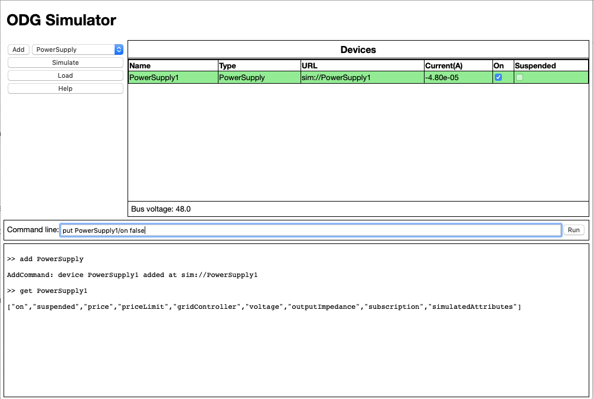

Device Properties
Devices implement a tree-structured database based on Martin Jäger's ThingSet architecture. These properties can be viewed and manipulated using command line get and put commands.

The format of these commands is:
and
The path argument is a conventional forward slash pathname whose root can be either the full URL of the device or, for convenience, the device's name can be used in place of its URL.
The value displayed by get or provided to put uses JSON notation except that embedded spaces are not permitted. On a put, the value is type-checked against the schema of the device and will fail with a "Bad Request" error if the wrong JSON type is used.
The ThingSet database is self-describing in that the properties supported by any data object can be listed by a get where the path ends with a final slash as in:
A path consisting of just the device name or its URL is equivalent to a path of "/" and shows the root properties.
The most important properties of managed devices appear in their root data object. All managed devices include the following properties:
All simulated devices include the following properties at the "simulatedAttributes" path. All managed devices are simulated devices.
These attributes illustrate how the simulator works internally. There is a simulator device that is not shown in the devices table but it has attributes like any other device that are observed by the simulated devices. A simulated device initiates a connection to the simulator when its simulator property is assigned the URL of the simulator. It then does a post (ThingSet create) to register itself with the simulator and observes its own device current at the matching data object in the simulator ThingSet. When the simulator runs, it updates the current time (actually a delta from the Unix Epoch) that is observed by each devices. Most devices are time-independent but the Battery, for example, changes its internal voltage as a function of current in or out during the time interval between ticks.
Similarly, the simulator observes the circuitElements field each device and it uses these values in its circuit analysis.
Attempting to change the values manually with put will not succeed because they will be over-written by notifications from the simulator or by changes from the device itself.